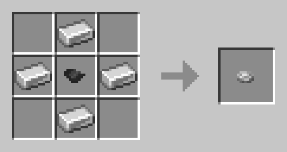

<!--
MomentariyModder Website 5.0 by MomentariyModder
The source code is available on GitHub!
-->

<!DOCTYPE html>
<html lang="en">
<head>
  <link rel="icon" href="../img/favicon.png">
  <title>Created Music Discs | Wiki | MomentariyModder</title>
  <meta name="viewport" content="width=device-width, initial-scale=1, maximum-scale=1" />
  <meta name="title" content="Created Music Discs | Wiki | MomentariyModder">
  <meta name="description" content="Hi, this is the official website of MomentariyModder!">
  <meta name="keywords" content="Minecraft, Mods, MomentariyModder">
  <meta name="theme-color" content="#4bb4f1">


  <script src="https://code.jquery.com/jquery-3.3.1.min.js"></script>
  <script src="https://cdn.jsdelivr.net/npm/handlebars@latest/dist/handlebars.js"></script>
  <script src="https://mcapi.us/scripts/minecraft.min.js"></script>
  <script src="../js/main.js"></script>
  <script src="../config.js"></script>
  <script src="../js/lightbox.min.js"></script>
  
  <script>tosAgreed = true</script>
  
  <link rel="stylesheet" href="https://cdnjs.cloudflare.com/ajax/libs/font-awesome/6.4.0/css/all.min.css"/>
  <link rel="stylesheet" href="../css/style.css">
  <link rel="stylesheet" href="../config.css">
  <link href="css/lightbox.css" rel="stylesheet" media="all">

</head>


<body>

  <div id="target"></div>

  <script id="template" type="text/x-handlebars-template">

  <header>
    <div class="hero" id="hero">
      <a href="#!"><h1 style="padding-top: 3%;"></h1></a>
    <p> </p>
    <div class="news-card" align="center">
	  <a href="../" class="lang btn" key="about"><i class="fa-solid fa-house"></i> Home</a>
      <a href="../wiki" class="btn"><i class="fa-solid fa-book"></i> Wiki</a>
	  <a href="#links" class="btn"><i class="fa-solid fa-share"></i> Links</a>
    </div>
	<p> </p>
	</div>
  </header>
  
  <section class="dark" id="projects">
	<h1><i class="fa-solid fa-book"></i> Wiki</h1>
	<div id="news">
    <div class="news-card" id="cmd">
	
    <p> </p>
    <a href="#cmd-fragment" class="btn">Disc Fragment</a>
	<a href="#cmd-mdb" class="btn">Music Disc Base (3.4.0+)</a>
	<a href="#cmd-emd" class="btn">Empty Music Disc</a>
	<a href="#cmd-ctmd" class="btn">Creating the music discs</a>
	<a href="#cmd-сompatible" class="btn">Compatible Mods</a>
	<a href="#cmd-inсompatible" class="btn">Incompatible Mods</a>
	<p> </p>
	This mod adds the creation of both vanilla and a number of mod music disc.
	</div>	
	<p> </p>
	<div class="news-card" id="cmd">
	<strong id="cmd-fragment">Disc Fragment</strong>
	This is a piece of a music disc, most often needed for crafting an empty music disc or for other disc fragments.
	<br>
	
	<br>
	Craft
	</div>
	<p> </p>
	<div class="news-card" id="cmd">	
	<strong id="cmd-mdb">Music Disc Base</strong>
	<i>Since version 3.4.0</i><br>
	This is a template for creating music discs.
	<br>
	
	<br>
	Craft
	</div>
	<p> </p>
	<div class="news-card" id="cmd">	
	<strong id="cmd-emd">Empty Music Disc</strong>
	This is the main ingredient for creating music discs.
	<br>
	
	<br>
	Craft
	</div>
	<p> </p>
	<div class="news-card" id="cmd">
	<strong id="cmd-ctmd">Creating the music discs</strong>
	Before version 3.4.0: The creation of music disc takes place in a Smithing Table, the main ingredient is an Empty Music Disc, then an item is added that is associated with the music disc itself.
	<br>
	Since version 3.4.0: The creation of a music disk takes place in a Smithing Table and in 1.20 format, i.e. the template is Music Disk Base, the base item is Empty Music Disc, and then an item related to the music disk itself is added.
	<br>
	Recipes for all music discs can be found through such mods as: Just Enough Items (JEI), Roughly Enough Items Fabric/Forge (REI) and EMI.
	</div>
	<p> </p>
	<div class="news-card" id="cmd">
	<strong id="cmd-сompatible">Compatible Mods</strong>
	Created Music Discs is compatible with more than 43 mods, below is a list of them.
	<br>
	<br>
	  Advent Of Ascension (by Scimiguy)
	  <br>
	  Aether: Lost Content Addon (by ModdingLegacy)
	  <br>
	  Alex's Mobs (by sbom_xela)
	  <br>
	  Ars Nouveau (by baileyholl2)
	  <br>
	  Berry Good (by TeamAbnormals)
	  <br>
	  BetterEnd (by Quiqueck)
	  <br>
	  Biomes O' Plenty (by Glitchfiend)
	  <br>
	  Blood Magic (by WayofTime)
	  <br>
	  Blue Skies (by ModdingLegacy)
	  <br>
	  Botania (by Vazkii/Violet Moon) 
	  <br>
	  Broken Discs (by Sweetygamer)
	  <br>
	  Bygone Nether (by izofar)
	  <br>
	  Deep Aether (by TeamRazor)
	  <br>
	  Distorted Discs (by BBoldt)*
	  <br>
	  Eidolon : Repraised (by Alexth99)
	  <br>
	  Eidolon Rebrewed (by EndangeredNayla)
	  <br>
	  Embers Rekindled (by RCXcrafter)
	  <br>
	  Environmental (by TeamAbnormals)
	  <br>
	  Eternal Tales (by Unknown_Raccoon)*
	  <br>
	  Fish and Tails (by fusionstudiomc)
	  <br>
	  Forest X Reborn (by MagicalAlexey)
	  <br>
	  Infernal Expansion (by InfernalStudios)
	  <br>
	  It Takes a Pillage (by izofar)
	  <br>
	  Legacies and Legends (by rebel0459)
	  <br>
	  Neapolitan (by TeamAbnormals)
	  <br>
	  Nether's Exoticism (by Unusual_Squad)
	  <br>
	  Quark (by Vazkii/Violet Moon)
	  <br>
	  Rats (by sbom_xela)
	  <br>
	  RedWolf's Music Expansion (by RedWolfNinja_)
	  <br>
	  Seeds (by Unusual_Squad)
	  <br>
	  Simple Farming (by enemeez1)
	  <br>
	  Sons Of Sins: Wounds of Chaos (by Furti_Two)
	  <br>
	  Spawn. (by ninnih_)
	  <br>
	  Spelunking Bags (by Unusual_Squad)
	  <br>
	  Sully's Mod (by GoesBySully)
	  <br>
	  The Aether (by TheAetherTeam)
	  <br>
	  The Aether: Redux (by Zepalesque)
	  <br>
	  The Bumblezone (by telepathicgrunt) 
	  <br>
	  The Graveyard (by finallion_13) 
	  <br>
	  The Legend of Herobrine (by Alex-MacLean)
	  <br>
	  The Twilight Forest (by Benimatic)
	  <br>
	  The Undergarden (by Quek04)
	  <br>
	  Tropicraft (by Cojomax99)
	  <br>
	  Unseen World (by sashakyotoz)
	  <br>
	  Unusual End (by Unusual_Squad)
	  <br>
	  Upgrade Aquatic (by TeamAbnormals)
	  <br>
	  Wilder Wild (by Osmiooo)
	  <br>
	  Windswept! (by rose__________________)
	  <br>
	  Wizard's Reborn (by MaxBogomol)
	  <br>
	  <br>
	  * Official support for the mod, made by the mod author himself
    </div>
	<p> </p>
	<div class="news-card" id="cmd">
	<strong id="cmd-inсompatible">Incompatible Mods</strong>
	Just Enough Items (JEI) (by mezz) [CMD 3.0.0-3.3.0]: does not display recipes in the smithing table where the template is missing
	</p>
    </div>
	</div>
  </section>
  <section class="dark">
	<div class="news-card" align="center">
	<a href="../wiki" class="btn2">◀ Back</a>
	</div>
  </section>
  
  <section class="light">
    <h1><i class="fa-solid fa-share"></i> Links</h1>
    <div id="links" align="center">
	  <a href="https://discord.com/invite/9XqgjRd"></a> 
	  <a href="https://twitter.com/momentariymoder"></a>	 
	  <a href="https://www.curseforge.com/members/momentariymodder"></a> 
	  <a href="https://modrinth.com/user/momentariymodder"></a> 
	  <a href="https://github.com/MomentariyModder"></a>
	  <a href="https://patreon.com/momentariymodder"></a>
	  <a href="https://boosty.to/momentariymodder"></a>
	  <a href="https://ko-fi.com/momentariymodder"></a>
	  <a href="https://www.buymeacoffee.com/momentariymodder"></a>
    </div>
  </section>
  
  
  <footer>
    <a>&copy; 2019-2024 {{server_name}}. All Rights Reserved.</br>{{server_name}} is not affiliated with or endorsed by Mojang Studios or Microsoft<br>{{server_ip}}</a>
	<a></a>
	
  </footer>
  </script>
  <script src="../js/license.js"></script>
  
</body>
</html>